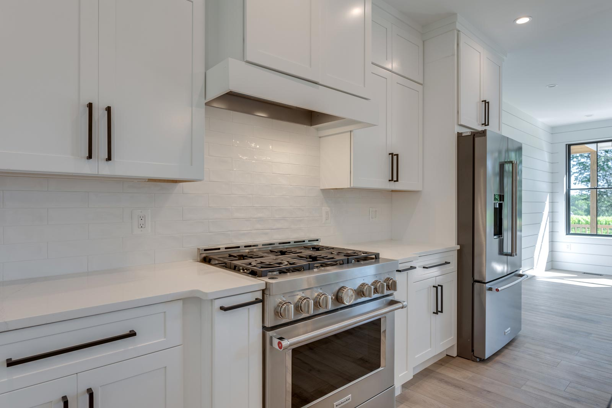

Renovations
Whole-home renovations and additions in Loudoun County
Custom homes are what we do most. We take on a small number of renovations alongside them, and we build them to the same standard.
Do you take on whole-home renovations?
Yes, selectively. We take on whole-home renovations, additions and historic work across Loudoun County and Northern Virginia, built to the same standard as our custom homes. We are not a high-volume remodeling company and we will tell you honestly if a project is better suited to someone else.
What we take on
Work that deserves the same care as a new build.
Whole-home renovations
Houses worth keeping, taken back far enough to do properly. The systems behind the walls get the same attention as the finishes in front of them.
Additions and second stories
Adding to a house is harder than building one, because the new work has to answer to what is already there, structurally and visually.
Historic work
Older homes in western Loudoun, where the point is to keep what gives the house its character and rebuild everything else to a modern standard.
What we do not do
Fire, water and storm insurance restoration is a separate business and not ours. If that is what you need, we will point you to the right people.
The same craft as our custom builds
There is no second standard.
A renovation runs on the same principles as a custom home: your non-negotiables first, then a priced list of what else is possible, then honest numbers on what any change costs before you decide. There are materials we will not go below on a renovation either.
Our historic restoration in Round Hill is the clearest example of what that looks like on an older house.
Talk to us about your renovation.
Tell us about the house and what you want to change. We will be in touch personally, within a couple of days.
Start a conversation